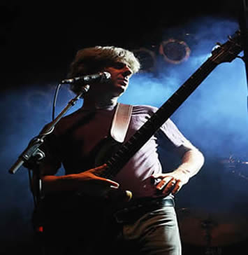

The Rhythym of Phish- Mike Gordon
Trey Anastasio
Mike Gordon
Page McConnell
Jon Fishman
| Home | Band Members | History | Popular Discography | Live |
Mike Gordon (born Michael Eliot Gordon June 3, 1965) is a bass guitar player and vocalist most recognized as a founding member and bassist for the rock band Phish. In addition to bass, Gordon is accomplished banjo player, and is proficient at piano, and guitar. He is also a filmmaker, photographer, and Author.

Gordon was born in Sudbury, Massachusetts, the son of Marjorie Minkin, an abstract painter, and Robert Gordon, founder and former President and CEO of New England convenience store chain Store 24. Gordon attended the Solomon Schechter Day School of Greater Boston and Lincoln-Sudbury Regional High School. Gordon met Trey Anastasio, Jon Fishman and Jeff Holdsworth while attending college at University of Vermont, where the rock band Phish formed in 1983.
Musically, Gordon's influence is the most obvious in Phish's many different renditions of various bluegrass, calypso and even traditional Jewish songs (Gordon is Jewish). He also contributed by singing, as well as writing off-beat lyrics to amusing but thought-provoking songs. Gordon played many roles in Phish. Until the band became too big for self-management, he dealt with practically all public relations and fan communication, such as answering fan mail, managing funds and booking gigs. Gordon wrote 19 original Phish songs and co-authored 22 additional Phish tracks.

Like Phish guitarist Trey Anastasio, Gordon plays custom-made bass guitars built by Paul Languedoc.
Gordon played two Languedoc bass guitars, including a "dragon" bass. These bass guitars employed custom wound pickups from Mørch guitars of Denmark. For Phish's March 1, 1997, show at Markthalle in Hamburg, Germany, he switched to a Modulus Quantum 5 bass guitar (similar to the Quantam 6 played by Phil Lesh) with two EMG DC pickups.
Gordon's signature sound is also attributable to an array of signal processing equipment including an ADA MB-1 pre-amp, an Ibanez flanger (used at the beginning of "Down with Disease"),
a Lovetone Meatball envelope filter (also used at the beginning of "Down with Disease"), and Akai Deep Impact, an EHX Bass Micro-Synth, an EBS OctaBass and a Boss SYB-3, a Boss BF-2 flanger, an Eventide 4500 Harmonizer, an Eventide Eclipse and a Lexicon LXP-15.